Accessible interactive JavaScript & CSS driven picture gallery
Gallery 1: Bog snorkelling
- 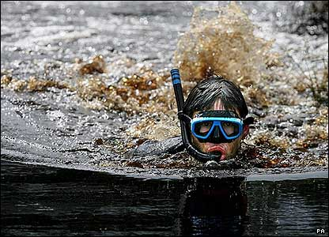
- The bizarre sport of bog snorkelling arrived in County Tyrone on Sunday. Competitors had to swim two lengths of a water-filled trench cut through a peat bog.
- 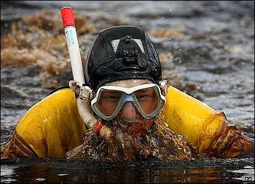
- The event was held at Peatlands Park, near Dungannon, on International Bog Day. It was part of a series of events which organisers said were aimed at highlighting the beauty of bogs.
- 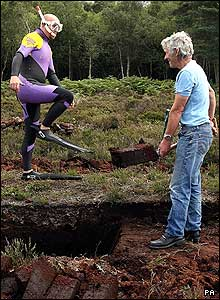
- A turf cutter looks bemused as one of the sportsmen makes his way to the race.
- 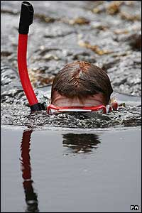
- Snorkels and flippers are worn by those taking part - the course must be completed without using conventional swimming strokes.
- 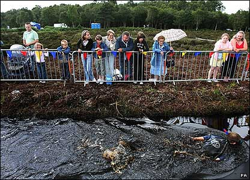
- Other activities for spectators included turf-cutting demonstrations and a biodiversity-themed puppet show.
Gallery 2: Your perspective on the world
- 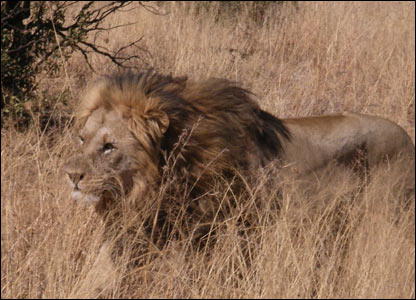
- Here is our weekly selection of the best photographs sent in by readers. We start with a picture by Jon Mac taken in Pilanesberg National Park, South Africa.
- 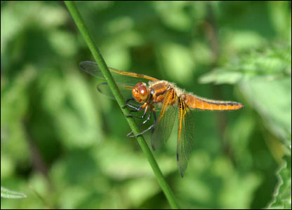
- Angus MacRae: "I found this dragonfly on a stem and was incredibly lucky to get so close."
- Cheryl Hoffmann: "While on vacation last week, I tried to capture the joy of the moment when the cold water comes splashing down the side of the fountain wall, Chicago."
- 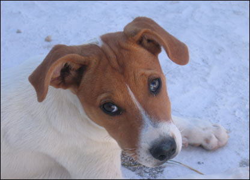
- Kim Hino: "One of the many, hungry, yet very loveable animals that wander through the streets in Santorini, Greece."
- 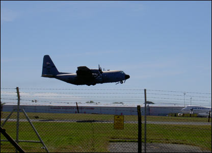
- Bruce Cowan: "I took this picture of an American Hercules taking off at Prestwick Airport on 17th July this year."
- 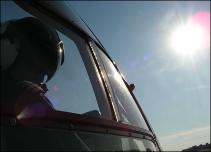
- Tim Jones: "Working in the 'greenhouse' of a helicopter cockpit - an air ambulance pilot endures the midday sun."
- 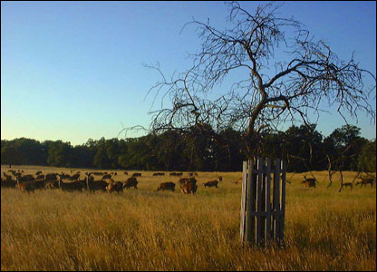
- Orhan Tsolak: "The lack of rain coupled with very high temperatures this summer, has turned Richmond Park in the UK into a landscape resembling parts of Africa!"
- 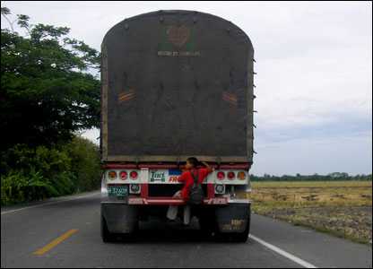
- Hernan Acevedo: "A boy getting a free ride through the rural areas of Colombia on the road from Bogota to Neiva."